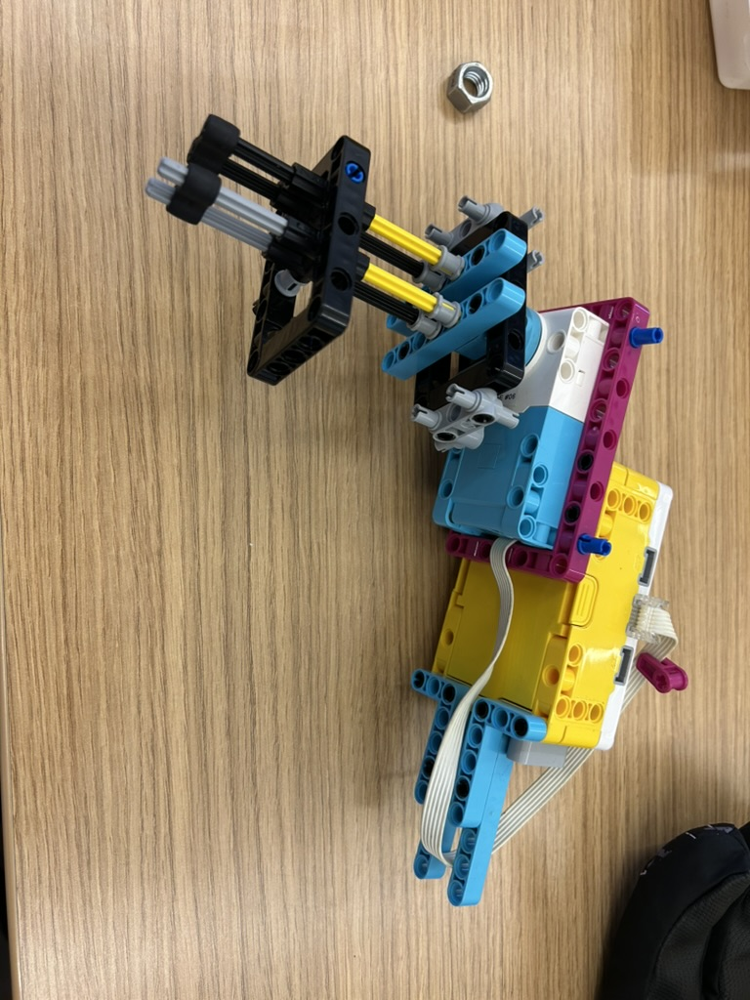

To simulate working in antigravity, the tool had to function upside down or sideways and be usable with either hand. It slides onto a screw and is operated by pushing it forward or backward. Its ergonomic shape is designed to sit comfortably in the hand. In the video below, my tool is the one on the left.